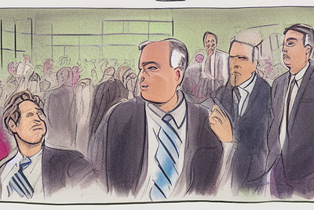

Kolby Sisk in Udacity Eng & Data
React state managment in 2022- Return of the Redux
At the beginning of the year if you told me I'd be publishing a recommedation to use Redux I would have laughed in your face. Yet her...
Oct 27 · 5 min read ·React
Popular on Medium

